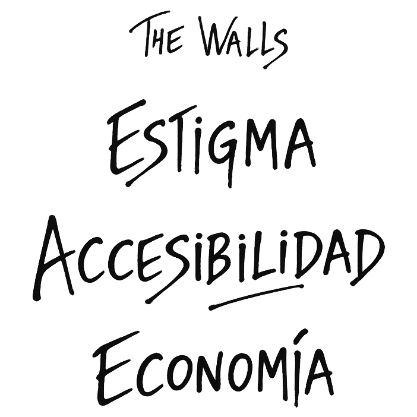
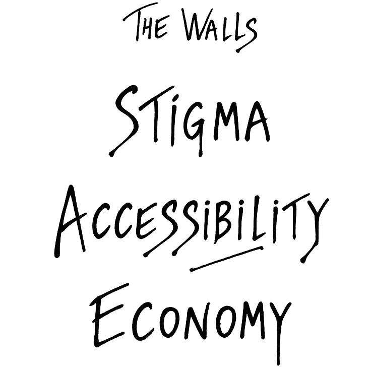

Acceso a atención psicológica en España · 2022-26
Análisis Exploratorio de Datos · Data Journalism
Introducción
Background
Sesiones Pendientes es un análisis exploratorio de datos sobre la relación entre las personas y la atención psicológica en España: cuánto cuesta pedir ayuda, cuánto cuesta pagarla y cuántos profesionales hay para darla.
Métodos
Todo el informe gira en torno a los tres muros que separan a la persona de la ayuda que necesita, y que se encadenan uno tras otro: el tabú (lo que callamos), la barrera económica (lo que cuesta pedir y pagar ayuda) y la barrera logística (la falta de profesionales y de cobertura suficiente). Cada sección los desmonta con datos para mostrar dónde, exactamente, se rompe el acceso.


Recorrido · Cuatro actos, diez capítulos
El proyecto, metodología y muestra
Quiénes respondieron la encuesta
Por qué hoy es una necesidad básica, y el coste humano detrás
Primer muro: lo que callamos
Psicología en el sistema público
Tercer muro: lo que cuesta
Un arma de doble filo
Cifras clave, conclusiones y agradecimientos
Todas las fuentes de este informe
Participación · Encuesta Sesiones Pendientes
La muestra está compuesta por 501 personas que han participado de forma anónima y altruista: 320 usuarios que buscan o han buscado asistencia psicológica, y 181 profesionales — en activo, en formación o que no ejercen. Juntos conforman una representación diversa y significativa de la realidad de la atención psicológica en España. Su colaboración desinteresada constituye el fundamento de este análisis — proporcionando información clave para comprender no solo el estado actual del sistema, sino también las expectativas, frustraciones y esperanzas de quienes interactúan con él. Los datos sociodemográficos recogidos ofrecen un marco interpretativo esencial: conocer quiénes son los participantes permite contextualizar sus respuestas y detectar patrones que pasarían desapercibidos en un análisis más superficial.
El perfil más
repetido es
trabajador/a
de 20-29 años.
La mirada de
psicólogos/as es
la otra mitad de
esta fotografía.
Contexto · Por qué hoy es una necesidad básica
Tras consultar a los participantes qué factores creen que hay detrás del aumento de los problemas de salud mental. La respuesta es contundente: el trabajo se dispara muy por encima de cualquier otro factor.
Le siguen la crisis económica, las relaciones sociales y familiares, la crisis social y las RRSS — factores con un patrón de fondo: un estilo de vida occidental, acelerado, con escaso margen para el descanso.
se trata de factores estructurales, tejidos en la rutina diaria de cualquier persona. Por eso la atención psicológica ha dejado de ser un lujo puntual para convertirse en una necesidad básica.
Antes de que entre en juego un solo dato oficial, la percepción ya está ahí. En nuestra encuesta a 320 usuarios, el 57,8% considera que la atención psicológica es hoy "poco accesible" o "inaccesible" — y si tuviera que buscarla, el 55,9% imagina un proceso "lento y pesado" o "un poco lento".
Depresión (la culpa, la pérdida, lo que ya pasó) y ansiedad (el control, la incertidumbre, lo que podría pasar), los motivos que más lleva a las personas a pedir consulta. Empatan en primer lugar, con 110 menciones cada una.
Justo detrás, con 53 menciones, aparecen las conductas suicidas — la consecuencia más grave de un malestar que no encuentra salida a tiempo.
Pero eso es solo la punta: entre todos los profesionales mencionaron 36 motivos distintos, 466 menciones en total. Todo lo demás —trastornos de conducta alimentaria, traumas, adicciones, duelos, maltrato— compone la larga cola detrás de esos tres primeros.
El consumo de antidepresivos en el SNS ha crecido casi todos los años desde 2010 — de 63,98 a 109,35 dosis diarias definidas por 1.000 hab./día, un aumento del 71%. Los ansiolíticos crecieron de forma más gradual, alcanzaron su pico hacia 2021–2022, y desde entonces empiezan a bajar. Entre ambos, ansiolíticos y antidepresivos concentran el 72% del consumo total de psicofármacos por receta del SNS (en dosis diarias definidas) — un reflejo directo de lo que cuentan los psicólogos/as: ansiedad y depresión son, con diferencia, los motivos de consulta más frecuentes.
| Gasto (PVP) | Dosis definidas / 1.000 habitantes |
|---|
Según Miras-Aguilar et al. (2026), 63 de cada 100 pacientes derivados a psicología clínica en el Área Sanitaria de Cantabria ya estaban en tratamiento psicofarmacológico en el momento de la derivación — antes incluso de empezar la terapia.
Las guías clínicas (NICE) recomiendan la terapia psicológica como primera línea de tratamiento para la ansiedad y la depresión. En la práctica, sin embargo, la medicación suele llegar antes, y la atención psicológica termina siendo un segundo paso en lugar del punto de partida.
Estigma · Primer muro · lo que callamos
Preguntamos directamente si la salud mental se sigue considerando un tema tabú. La respuesta es contundente: el 92% cree que ya no lo es — un 8,75% considera que ya no es tabú, y un 76,88% cree que está dejando de serlo.
Google Trends mide en tiempo real cuántas personas buscan un término en internet — una señal directa del interés colectivo, sin filtros sociales ni vergüenza. Si alguien busca "psicólogo" o "ansiedad", es porque algo le preocupa de verdad.
Los datos de España entre 2004 y 2024 cuentan una historia inequívoca: durante años el interés fue plano, casi invisible. Luego llegó la pandemia de 2020 — y algo se rompió. Las búsquedas se dispararon y no han vuelto a bajar.
No es una moda. Es el momento en que una sociedad entera dejó de fingir que estaba bien.
Accesibilidad · Psicología en el sistema público
El sistema público español no publica un recuento nacional de psicólogos clínicos, ni mantiene un registro centralizado y accesible de sus recursos humanos en salud mental. Los datos que se presentan a continuación proceden, por tanto, de la revisión de planes estratégicos autonómicos, atlas de salud mental, informes del Defensor del Pueblo y estimaciones publicadas por asociaciones profesionales del sector, recopilados y analizados mediante investigación académica independiente. Con las limitaciones metodológicas propias de fuentes heterogéneas y de distinta antigüedad, es lo más parecido a una fotografía oficial que existe hoy sobre la cobertura real del sistema.
2.615 profesionales estimados en todo el Sistema Nacional de Salud — debajo de la estimación mínima (8) y óptima (11) de la Asociación Española de Neuropsiquiatría (año 2000), y de la estimación mínima de 12/100.000 hab. de Fernández-García.
Un estudio con 2.765 pacientes del Área Sanitaria de Cantabria encontró una mediana de 51 días de espera para la primera cita — el 65,6% supera el estándar clínico recomendado de 6 semanas (42 días). Y no acaba ahí: un 15,8% abandona antes de la segunda sesión, con el riesgo disparándose a partir de los 36 días de espera entre citas.
Al preguntar dónde buscarían atención psicológica si la necesitaran, el 64,4% de los usuarios dice que acudiría primero a su entorno cercano — familia, amistades, pareja — y un 25,3% buscaría en Internet. El sistema público apenas aparece: solo un 5,9% acudiría primero a su médico de cabecera — un reflejo directo de la escasa confianza que genera como puerta de entrada a la salud mental.
Economía · Tercer muro · lo que cuesta
Supongamos que rompes el silencio y encuentras quien pueda atenderte. Queda el último muro, y es de dinero: el precio medio de una sesión supera lo que la mayoría puede asumir — en todas las comunidades, sin excepción.
El 83% no puede asumir más de 50€ por sesión.
El precio medio de una sesión en España es de 60€ — y no hay ni una sola comunidad donde el precio medio o mediano baje de ese umbral de 50€.
Nuevas tecnologías · Un arma de doble filo
El 82,8% de los usuarios domina o usa habitualmente las nuevas tecnologías, y esa familiaridad se traduce en apertura real: el 83,1% se plantea, ya ha probado, o apostaría directamente por la terapia online. La tecnología democratiza el acceso, rompiendo barreras de horario, distancia y coste.
En nuestra propia encuesta, un 14,4% de los participantes ya señala las redes sociales como uno de los factores que más influyen en su salud mental. En la pregunta abierta sobre qué factores influyen en el impacto de la salud mental hoy, las redes sociales aparecen con 46 menciones — por detrás del trabajo y las crisis económica y social, pero por delante de la educación o la salud física.
No es casualidad. Las interfaces que usamos cada día no están diseñadas para informarnos y dejarnos ir — están diseñadas para retenernos. El scroll infinito elimina cualquier punto de parada, y notificaciones, "me gusta" y comentarios llegan con un refuerzo de recompensa variable, el mismo mecanismo que hace adictivas las tragaperras. El cerebro nunca sabe si la próxima comprobación traerá dopamina o nada, y esa incertidumbre es justo lo que nos hace volver.
A ese mecanismo se suma el propio contenido: los momentos idealizados de la vida ajena alimentan la comparación social, el FOMO mantiene el sistema nervioso en alerta, y el goteo de malas noticias genera una hipervigilancia que nunca desconecta del todo. Nada de esto necesita parecer una crisis para dejar huella — se acumula en dosis pequeñas, y es justo eso lo que la investigación relaciona cada vez más con más ansiedad y depresión, sobre todo entre los usuarios más jóvenes.
Cierre · Cifras clave y conclusiones
Casi todo el mundo coincide en que el tabú está cayendo — el 92% de los participantes, usuarios y profesionales por igual, ve la salud mental dejando de ser un tema vedado. Pero ese avance choca con dos muros que no ceden: el sistema público no tiene psicólogos suficientes en una sola comunidad autónoma, y el sistema privado cuesta más de lo que el 83% de la gente puede permitirse. La atención psicológica ha dejado de ser un lujo puntual — es una necesidad básica. Falta que el sistema la trate como tal, empezando por publicar los datos que ni siquiera lleva de sí mismo.
Este informe existe gracias a las 501 personas que respondieron, de forma anónima y sin nada a cambio, preguntas sobre una de las partes más difíciles de sus vidas. Gracias.
Corpus · La totalidad de fuentes consultadas para este informe